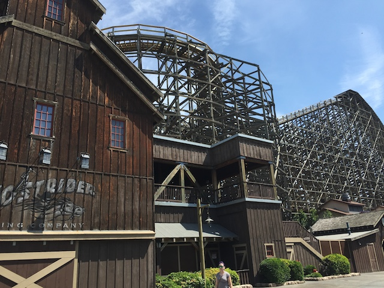
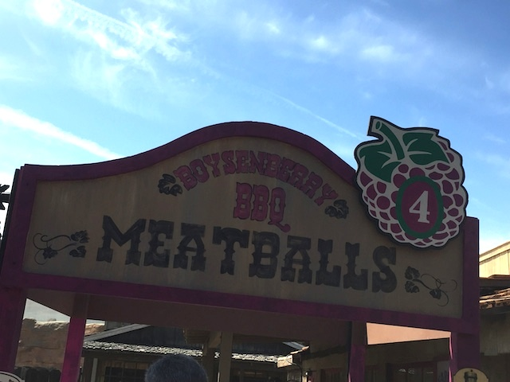
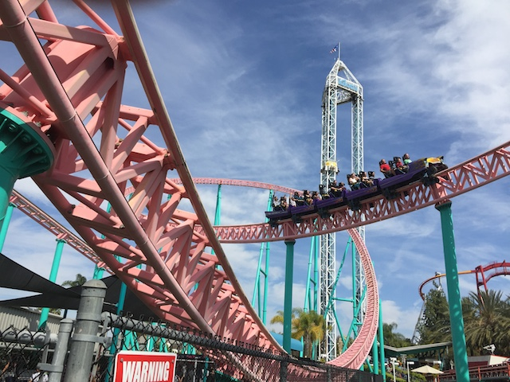

| |
Knotts Boysenberry Festival 2016
All right. Time for another update. We're back at Knotts Berry Farm since they brought back their Boysenberry Festival. You know that I went last year, and absolutely loved it. So I just had to go back this year. And at the last minute, I managed to find some time to go. And it was great this year. Oh, and Holy Crap!! Why am I parked in the overflow parking lot?
HOLY F*CK!!! It is CROWDED today!!! Even more so than last year, and that's saying something. So yeah. We won't be riding that much today.
But that's OK. Because I didn't come down to ride the rides today. I came down for all the amazing Boysenberry Food that's only avaliable once a year.
In a repeat from last year, they also served alligator this year. And yeah. I'm not a fan of this meat. It's a little too...fishy for me. I honestly wouldn't have gotten it if it wasn't for being on the sample card.
Well, I certainly see that a lot of people are curious to see how alligator tastes.
Also from last year were the Boysenberry Wings. And yeah. I LOVED them last year, and I LOVE them this year. You have to get these. They are freaking awesome!
But I want to be a star. =(
 Hmm. I see that they've really been doing some good work on the Ghostrider Makeover.
Hmm. I see that they've really been doing some good work on the Ghostrider Makeover.

I'm really looking foreward to riding this in June.
Ooh. Look at the pretty flowers.
New for this year are the Boysenberry Short Ribs. One the one hand, these things are freaking delicous. On the downside, they are a pain in the ass to eat. Even more so than most ribs.
Also new for this year was the Boysenberry Panna Cotta, which is a Italian Gelatin based dessert, often compared to Creme Brule or Tiramisu. I liked it, but this is no Creme Brule.
The foodies have arrived.
Yep. That's exactly why I'm here.
Aww. Flashback to the old Knotts Berry Farm days.
Come one! Come all! Come on down to the Knotts Boysenberry Festival!! =)
I know I did the Wine Tasting last year, and I loved it. ESPECIALLY the Boysenberry Beer. I would've loved to do it again this year, but...financial lockdown. I had to convince myself just to come down in the first place for this. So sorry, for as much as I loved the Boysenberry Beer, I just couldn't justify spending the money this year. =(
Yeah. You can see just how hellishly crowded it is today.
Hmm. Looks like people are finally catching onto the fact that "PONY EXPRESS IS THE BEST RIDE EVER!!!". =)
For those of you with short term memory loss and already forgot why we're here (If this is you, please seek a doctor).
Ooh. They've broken ground for the new stage that's gonna be replacing Screamin Swing.

All right. Continuing on with all the great Boysenberry Food, we have the Boysenberry Meatballs.
They were awesome, but honestly, not quite as awesome as I was anticipating. But I can't complain, because like I said, I still loved them.
Howdy y'all!! You foodies enjoying the Boysenberry Festival? Well then don't forget to vote for your favorite Boysenberry Food item today!! Just be on the lookout for voter supression (We are in Arizona after all. Look at the flag). ;)
And finally, we have the Boysenberry Dessert Flautas. I know they had these last year, but I didn't eat them. So this was my first time trying them. Meh, they're all right. But honestly, it's no Boysenberry Trifle.
Holy Crap! They took out Riptide. For a long time, I had been assuming that they would take it out, but then I saw it testing at West Coast Bash and when I visited for a non-update trip just for a random day of fun in October, Riptide was open and I rode it. So I just assumed that I was wrong about them tearing it down and that it was here to stay. WRONG!!! Now Riptide is gone. Can't say I'm sad since it was a sh*tty Top Spin, but I just wish I got a photo of it running back in October.
Well, much like when I was at Six Flags Magic Mountain last week, the park is insanely crowded, and I just decided to wait in a couple of the long lines for the sake of killing time and riding something (at least I was here with a friend). And hey, this Xcelerator line wasn't NEARLY as bad as that HORRENDOUS X2 line (I still can't believe they were only running one train!!!).

Still one of the best coasters in California. That launch just gets me every single time.
Wanna ride a random flat ride?
OK. I know this sounds crazy, but the Surfside Gliders line was almost the same length as the Xcelerator line
All right. Now time for the highlight of the Boysenberry Festival. The foods I've been looking foreward to the most. The Fun Bun (Deep Fried Cinnamon Roll with Boysenberry Cream Cheese and drizzled in Boysenberry Sauce) and the Fun Stick (Deep Fried Cheesecake drizzled in the Boysenberry Sauce on a stick).
OMFG!!! SO GOOD!!! SO F*CKING GOOD!!! Both of these things are some of the most delicous things ever!! I want both of these things on the menu permanently. I only ate half of each since I split both with a friend, and trust me. That's all you need. Because both of these things are EXTREMELY filling. Afterwards, you'll be saying to yourself "Ugh. So good. But so full. I think I'm gonna go bulimic now. Excuse me, I need to go run a marathon now." So yeah. Definetly be sure to have both of these things at the Boysenberry Festival.
Hey, Montezoomas Revenge doesn't get a long line. Let's ride that.
I spy with my little eyes, a hidden Marcy.
Anyone wanna ride Waveswinger today?
Finally, we decided to close out the day with a ride on Supreme Scream. Hey, they were running all three towers, so the line moved fast. I want to thank Knotts Berry Farm for another fabulous Boysenberry Festival and for having such great foods such as the Boysenberry Wings, Meatballs, and of course, the Fun Bun & Stick. I know with all this great Boysenberry food (even with it only being avaliable during the Festival), you're gonna see Knotts Berry Farm jump up quite a bit on our Top 10 Theme Park Dining Options List (During the festival, the food at the park is on par with Silver Dollar City. It's that good).
Home
|